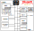

This article is part of a study about the ports of Another World. It is highly recommended to read Another World 101 before reading this.
Development of the Jaguar started in 1990 when Atari
commissioned Cambridge-based Flare Technology to
design not just one but two new game systems simultaneously. The project involved a fourth generation 32-bit system, called Panther, and an audacious 64-bit system called Jaguar[1].
Three years later, with the Jaguar project ahead of schedule, Atari decided to abandon the Panther and released its 64-bit machine in November 1993.
Martin Brennan, Ben Cheese, and John Mathieson from Flare Technology made opinionated design decisions. Besides the 18-button controller, the machine had no fewer than
five processors to juggle with.
The bold ad, "Do the Math!"[2] featuring the 64-bit claim triggered mostly suspicion from potential customers. No matter how John Mathieson attempted to explain it in interviews, the machine felt like the marketing department was attempting to mislead customers. How Atari could have managed to manufacture something four times better than the 16-bit Super Nintendo and 16-bit Sega Genesis was not clear.
Cautious purchasers on one side were met by incredulous game developers on the other side. The five-processor architecture was powerful but highly unusual for people accustomed to dealing with a single processor. Programming the Jaguar was an art that few took the time to learn.
The limited library of games available at launch prevented the formation of a critical mass
of customers. Low sales figures made developers less likely to invest in the Jaguar which
in turn impacted sales. Over its three-year lifetime, Atari sold about 120,000 units.
 The designers of the Jaguar departed from the traditional architecture where one CPU drives fixed-pipeline audio and graphics chips as we saw earlier in the series with the SNES and Genesis.
If we find a Motorola 68000 like in the Atari, Amiga, and Genesis (albeit running at 13.295 Mhz) and a sprites engine (called Object), there is also two 32-bit RISC processors running at 26.59 MHz called TOM and JERRY.
According to the (excellent) documentation[3], TOM is meant to be the graphic processor while JERRY thanks to a more generous amount of SRAM is better suited to take care of the audio.
Both RISC processors can execute instructions from the general DRAM but that would have hogged the data bus. To reach maximum throughput each processor was to be fed data and instructions via its local SRAM (called scratch-pad).
The separation of tasks is only a suggestion. Both processors can be used to perform graphic tasks like it is the case in DOOM Jaguar. The one specificity of JERRY is that it is the only chip connected to the network adapter.
John Mathieson gave numerous interviews, describing the constraints involved in picking the components of the Jaguar and his vision of the system.
Atari were keen to use a 68K family device, and we looked closely at various members. We did actually build a couple of 68030 versions of the early beta developers systems, and for a while were going to use a 68020. However, this turned out too expensive. We also considered the possibility of no [Motorola 680x0 chip] at all. I always felt it was important to have some normal processor, to give developers a warm feeling when they start.
The 68K is inexpensive and does that job well.
— John Mathieson
The 68000 may be the CPU in the sense that it’s the center of operation, and boot-straps the machine, and starts everything else going; however, it is not the center of Jaguar’s power. ... The 68000 is like a manager who does no real work, but tells everybody else what to do.
I maintain that it’s only there to read the joysticks.
— John Mathieson
For a programmer willing to roll up her sleeves, the machine was dreamy. That being said, there were a few issues.
The Blitter could do basic texture mapping of horizontal and vertical spans, but because there wasn't any caching involved, every pixel caused two ram page misses and only used 1/4 of the 64 bit bus. Two 64 bit buffers would have easily tripled texture mapping performance. Unfortunate. ...
The 68k was slow. This was the primary problem of the system. You options were either taking it easy, running everything on the 68k, and going slow, or sweating over lots of overlayed parallel asm chunks to make something go fast on the RICS processors.
That is why Playstation kicked so much ass for development — it was programmed like a single serial processor with a single fast accelerator.
If the jaguar had dumped the 68k and offered a dynamic cache on the RISC processors and had a tiny bit of buffering on the Blitter, it could have put up a reasonable fight against Sony.
— John Carmack (slashdot.org)
Sébastien Briais who programmed Another World for the Jaguar also mentioned the difficulties to tame the feline.
To program the Blitter on Jaguar is an art form where you have to navigate subtle undocumented behavior and bugs.
— Sébastien Briais
As for the 64-bit claim that repulsed so many potential customers (the author of this article included), where is the truth?
The machine is a potpourri of bitness. The inside of the 68000 is 32-bit with a 16-bit bus while the RISCs are fully 32-bit system with a 64-bit bus. The Object processor internal is 64-bit with a 64-bit data bus. It was not technically incorrect to call the machine 64-bit.
Jaguar has a 64-bit memory interface to get a high bandwidth out of cheap DRAM. ... Where the system needs to be 64 bit then it is 64 bit, so the Object Processor, which takes data from DRAM and builds the display is 64 bit; and the Blitter, which does all the 3D rendering, screen clearing, and pixel shuffling, is 64 bit.
Where the system does not need to be 64 bit, it isn’t.
There is no point in a 64-bit address space in a games console! 3D calculations and audio processing do not generally use 64-bit numbers, so there would be no advantage to 64-bit processors for this.
— John Mathieson
It was however a risky move which ended up adding suspicions to a machine with a high price, a weird joypad, and few titles at launch.
JERRY is a pretty easy chip to figure out. It is a 32-bit RISC chip connected to 8KiB of RAM and a DSP.
TOM on the other side is a beast. The color space is like nothing else seen before. To understand how it works, start with a 3D RGB cube and flatten the three bright faces into a 2D square. The square is addressed via X,Y coordinate encoded on one byte resulting in 256 colors.
Next, add one byte to control the darkness. This gives 256 shades of 256 colors = 65,536 colors. A color space so peculiar that it cannot be represented accurately with today's sRGB monitors.
At the heart of the video system is the Object processor. It is the component which generates the video signal towards the TV. It is a sprite engine which reads what to render via 64-bit values called "phrase". Five types of commands are available. It has the cool capability to scale sprites with no performance impact. It is a versatile chip accepting sprite source using 16-bit CRY, 24-bit true color but also palette (called CLUT) with 1, 2, 4, and 8-bit index.
Last, we find the 32-bit GPU with its dedicated 2KiB of RAM, connected to a Blitter. The GPU features special instructions for 3D like matrices manipulation. Its goal is mainly to pilot the Blitter to render lines of pixels. It has the capability to request the Blitter to Gouraud shade a line or perform Z testing (although it certainly killed performance to read the DRAM). It is fully programmable and has no fixed pipeline.
With TOM, Atari got a lot of things right. The machine in theory was able to excel at both 2D and 3D since the sprite engine had no limit in terms of sprite dimension.
A 2D game was able to have as many sprites as needed, with arbitrary size. The scaling capability was powerful and extensively used in NBA Jam: Tournament Edition and first person shooters such as DOOM.
A game requiring direct access to the framebuffer like a 3D game could do just that. Reserve an area of DRAM, write directly into it and have the Object processor treat it as one gigantic sprite.
Given the technical short-comings of the Atari ST, it is hard to understand how this machine received so much support. It is especially surprising when comparing it to its main competitor the Amiga. How this happened was already discussed in the series. The bottom line is that, by the mid-90s, Atari had managed to rally legions of European young adults behind its products.
There were monthly magazines dedicated 100% to Atari such as ST Magazine[4] which ran from 1985 until 2010. Demo-makers obstinately studied the machine. They ultimately were able to reach an intimate knowledge of the GLUE video signal generator to correctly guess how it worked and to remove the black borders on the screen. These techniques known as "overscan" and "fullscreen" were perfected until 2005 when all borders had been removed.
When passion is taken to that level, it is not surprising to see it endure the passage of time. Even less so when the machine is actually a powerhouse like the Jaguar, a product released at the peak of the Atarimania.
The French group Jagware gathered lovers of the machine. As the Atarists movement gained in popularity, it merged all Atari things into the Atari Convention (AC). The first convention was held in 2005 and continued until 2016.
The story of Another World on Atari Jaguar starts during the AC 2007 gathering held in Congis-sur-Thérouanne. Eric Chahi happened to be there. So was member of "The Removers" group Sébastien Briais. Both being Atari lovers, they started to talk about the circumstances that prevented Another World to make it to the Jaguar. And how to address the situation.
The event organizers presented me to [Briais’ programming group] The Removers.
They asked me if it would be possible to port Another World on Jaguar. I was impressed by their ability to code on this machine. These guys sounded like crazy people, so I immediately said, ‘Yes.'.
— Eric Chahi, interview for venturebeat.com[5].
After that, Eric sent the Atari/Amiga source code to Sebastien and granted him the right to work on a port.
To work on this project, Sebastien has to build a toolchain. Prototyping was done in C on ArchLinux[6] without audio. Then routines were converted to 68000 or RISC depending on the processing power needs. To deploy to actual hardware, Sebastien used a Skunkboard[7] which is a cartridge with flash storage that can be written to via an USB connector.
Above, a Skunkboard PCB. The bottom connectors are meant to the Jaguar cartridge port. Sockets U1, U2, and U3 welcome the flash, and J3 the USB comm.
The assembler was MadMac which was originally written at Atari for their need of a high-performance for their work[8] and the official tool distributed with the Jaguar SDK. It has the advantage to support both 68k and TOM/JERRY's RISC.
For the linker, ALN (Atari Linker), also part of the original SDK, was used for a while but later was swapped out in favor of Seb's in-house jlinker[9].
Both MadMac and ALN are closed source a.out format 32-bit tools. To be able to run the 27 years old binaries, a special a.out module is required[10].
For the C compiler, Sebastien relied on Vincent Rivière's work to maintain two Arch Linux packet binutils[11] and gcc[12] to output 68k instructions.
Finally to generate CLUT images, a tool called jconverter[13] was written.
With access to the source code, Sébastien could have done a quick job by using the Atari ST version which is 100% 68000 ASM. But he had a much more polished plan in mind.
I settled on running most of the VM on the 68000. The chip is powerful enough to run the VM without problem but to make it more fun I wrote a JIT compiler which converts bytecode functions into 68k functions on the fly.
I optimized the polygon drawing routines to run on the GPU. The VM reads the bytecode and when it is a drawing opcode, it extracts parameters from the bytecode (baseSprite, index, x, y, and scale) and writes them to TOM's SRAM where a special routine takes care of rendition.
The GPU essentially pilots the Blitter to render polygons as lines of pixels. The call to the GPU routine is not totally blocking, it returns just after the last Blitter call to draw a line so some drawing may still take place when bytecode interpretation resumes on the 68000.
The Object processor (a.k.a sprite engine) has almost nothing to do except drawing a huge non-scaled sprite made of the whole framebuffer.
In terms of pixel format, even though the original game used only 16 colors, a 4-bit per pixel CLUT was never an option since I wanted to use the remastered 256-color backgrounds. I used 8-bit per pixel and would have done so even without the need for background since using 4-bit pixels complicates things for little gain. More importantly I have been traumatized by the Atari ST which used 4-bit and was a pain to deal with.
For the music and sound effect, I decided to use the Amiga's 68000 high-level routines and wrote a Paula emulator which runs on Jerry and talks to the DSP.
— Sébastien Briais
Having secured the collaboration of Eric Chahi allowed Sébastien to use the new 1152x720 256 colors backgrounds produced for Another World 20th Anniversary Edition.
The original version of Another World rendered backgrounds via a series of polygons encoded in the bytecode. Towards the end of development, fatigue inspired the introduction of opcode #25 (0x19 LOADRES) to load a bitmap directly from resources into framebuffer #0.
The anniversary edition still renders background with polygons but added the extra bytecode 0x19 of desespoir at the end to overwrite each background. This trick allows players to switch between "classic" and "remastered" seamlessly.
The AE version was not the first time backgrounds were remastered. The 3DO was the first port to do it but artists took a much aggressive stance in terms of color temperature and shape whereas the AE version attempted to use the same color tone.
Unfortunately the cartridge capacity of 4MiB[15] was too little to allow 94 full size 1152x720 backgrounds.
Even after dropping the resolution of the backgrounds to 320x200, the game still did not fit in 4MiB. To solve the problem I compressed them. The Jaguar SDK had its in-house support for lossless compression called BPEG but the tool provided by Atari (tga2jagpeg) had the same problem as the assembler and loader (closed source and a.out format) and I did not bother digging into it.
Instead I used LZ77 and implement my own GPU routine to decompress background on the fly. It worked well bringing the background size from 6MiB to 4MiB (code included). Performance was good except for the elevator scene in the prison where a scrolling is involved. I had to keep this one uncompressed.
— Sébastien Briais
The implementation of the VM with TOM and JERRY were well able to max out the game framerate at 25Hz.
The game ran well on the Jaguar. After the game shipped I realized I had enough speed to implement a 640x480 version. I wanted to challenge myself to learn how interlacing worked. It turned out to be easier than I thought minus the need to up-sample the backgrounds. I may release that version too someday.— Sébastien Briais
In fact, the game ran so fast that it became a problem.
The VM has a special register to tell how long a frame was to be displayed but it was not populated for graphics heavy scenes such as when the tank enters the arena. My guess is that the Amiga/Atari struggled so much in these parts that it was not needed.
I had to manually add delay here and there to slow down the game in these parts.
— Sébastien Briais
The Removers[16] did not stop at producing a software ROM. They wanted to produce a game as it used to be done with a cartridge, a manual, and a box. Not an easy task.
To produce the cartridge I was helped by two friends who are into electronics (SCPCD and Zerosquare). They did a PCB which uses modern components (Flash instead of EEPROM). They called it PCB Jagtopus[17][18]. We got a first run of PCB in Germany but we were not happy with the quality. We ended up finding what we needed with Tom-IC in Switzerland.
For the plastic case of the cartridge, we bought leftover stock from Best Electronics and then B&C.
For the box I fired up Inkscape and I mimicked the look and feel of Jaguar games at the time (with the rounded corner screenshots). I went to Paris and toured printers who mostly looked at me weird when I told them what the project was. I ended up finding someone willing to give it a try but we could not work on a need-to-print basis. We had to order batches (minimum 1000 units). After more searching we found a company in Toulouse who was willing to do not only printing but also cut it.
Finally for the manual, I used LaTeX since this is what I know the best. These were printed in Orleans.
The most difficult part is to write the ROM content to the cartridge! It is a tedious process where each cartridge is done one by one. You need a special Jaguar with a developer BIOS called BJL[21]. You connect the Jag to a PC via a parallel port connected to the console joypad port. You insert a blank cartridge and you start uploading from the PC.
— Sébastien Briais
The early Atari 2600 cartridge had no copy protection. An opportunity which was greatly exploited throughout the 80s by pirates. Atari solved this problem by using an RSA asymmetric authentication mechanism on the 7800, Lynx, and Jaguar[22] as explained in detail by harmlesslion[23].
Atari Jaguar cartridges start with an encrypted boot header, broken into 65 byte blocks. Each block is encrypted with a full 520-bit key (I kind of wonder if that didn't violate export restrictions back in the mid-90s? [...]). [...]
The code is decrypted into the GPU, where it is then executed. The code runs an MD5 hash on the cartridge, compares it to the one that was embedded, and if all looks good, it writes the magic value 0x03D0DEAD to the first GPU RAM address and exits.
In other words, when ready to release their game, a studio was to send their master record to Atari. Using their closely guarded private key, Atari generated a signed (RISC program + MD5 value) and returned it to the studio. That signed program/hash was to be burned on the cartridge. The Jaguar shipped with the public key and was able to run the code and compare the generated MD5 with the signed MD5 to validate the game.
When Atari went belly up, the precious private key was allegedly lost. This was a huge problem for the homebrew community. For the release of Battlesphere in 2000, developers took an existing signed RISC boot and modified their game payload until they got an MD5 collision[24].
Even though Hasbro released all rights to the Jaguar[25] in 1999, they had no idea where the private key was and did not attempt to locate it. Luckily for Another World, the private key was "found" and released by atarimuseum,com on November 12, 2003[26]. The home-brew community quickly generate a signed program writing 3DODEAD regardless of the payload hash, opening the door to unlimited games and the Skunkboard board we saw earlier.
One of my favorite questions to ask during interviews is about interesting bugs encountered during the project. Sebastien had a really good one.
There is one bug that took me a while to figure out.
As I tested the game, Lester ended up stuck in front of one of those automatic doors in the base. The door just would not open itself.
After much digging into the VM code I discovered that I had implemented a right shift using a signed variable which messed up the bit pattern on the left by inserting unwanted 1s. The solution was to use an unsigned int.
Bugs are pretty hard to find on Jaguar since there is no debugger available (hence the value of the Linux prototype).
— Sébastien Briais
As for the answer to what was the most difficult part of the adventure.
The most difficult thing was the lack of accurate documentation. Atari's manual can be quite enigmatic at times and some tutorial online are not reliable.
Figuring out how to do rotation with the Blitter was not an easy task. It seems there is also a way to do collision detection with it with an advanced mode but I never figured how.
There are subtle things to know like for example the Object processor which modifies the list of objects when it reads it. Or that the scoreboarding[27] has bugs like when a register cannot be read right after being written to (you have to add a few noop instructions).
This is why I have published the source code of my library rmvlib[28] to help other programmers to understand the machine. The RISC Paula emulator, the polygon renderer, and the sprite managers are there and gather a lot of what I learned about the Jaguar.— Sébastien Briais
Started in 2006, The Removers passion project would take seven years to come to completion in 2013. The result is a professional quality title. Without a doubt among the best available on the platform.
We published a little over 200 copies in 2013. Then, given the success and demand, we have done the same for the second run.
These days we are sold out but you can show your interest on The Removers waiting list and we may run another batch.
— Sébastien Briais
If you don't have a Jaguar or an emulator to watch it run, Jatty Virdee recorded[29] a gorgeous session on an equally gorgeous Sony PVM[30] Trinitron (re-hosted here with authorization).
Having studied the platform in depth and witnessed the quality of this port, I developed an appreciation for the Jag. It made me wonder how close Atari came to a smashing success.
Had the console been gifted with more quality games like Another World and DOOM, I am convinced players could have gotten over the price, the joypad, and maybe even the infamous 64-bit claim.
I came to the conclusion that what cursed the Jag was the higher than average difficulty involved in producing good games. Studios did not have the time to craft RISC instructions and navigate the bugs. What a pity.
Thanks to Sébastien Briais and Gregory Montoir who contributed their knowledge to this article.
{kind=link}
{kind=link}
{kind=link}